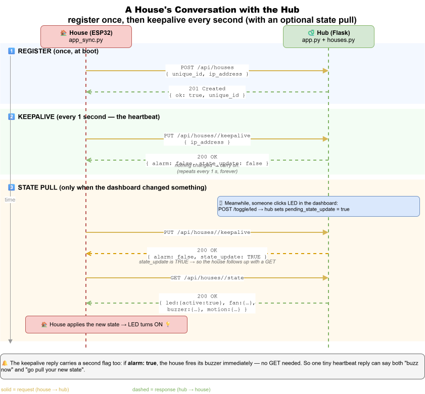

Day 3 — WiFi + Talking to the Hub
Goal: Make your ESP32 join the camp WiFi, send an HTTP request to the hub, and appear in the dashboard. By the end, clicking a button in the dashboard will switch your real LED.
Time: ~2 hours.
Prereqs: Day 1 hub running on a counsellor's laptop. Day 2 — you can blink an LED and read a button.
🔬 The whole thing in one file: examples/day3_wifi_hub/simple_led.py is a complete, readable "smart house" (WiFi → register → keepalive → LED) in ~120 lines. It's a gentle stepping stone before the full multi-device firmware — run it once you've got WiFi working below.
This is exactly the conversation simple_led.py has with the hub:

Part 1 — Find the hub (10 min)
The hub is a web server on the camp network. To talk to it you need its IP address and port.
🛠 Try this: a counsellor will write the hub URL on the board, e.g. http://192.168.1.42:8080. Verify it works:
- On your laptop, open http://192.168.1.42:8080 in a browser. The dashboard loads.
- From PyCharm's terminal:
bash curl http://192.168.1.42:8080/api/housesYou see[](or other teams' houses).
Note that URL — you'll put it in secrets.py in a moment.
Part 2 — Connect to WiFi from the REPL (15 min)
In Thonny's shell:
🛠 Try this:
>>> import network
>>> wlan = network.WLAN(network.STA_IF)
>>> wlan.active(True)
>>> wlan.scan() # list nearby networks
[(b'CampWiFi', b'...', 6, -42, ...), ...]
>>> wlan.connect("CampWiFi", "thepassword")
>>> wlan.isconnected()
False # still connecting
>>> wlan.isconnected()
True # after a few seconds
>>> wlan.ifconfig()
('192.168.1.107', '255.255.255.0', '192.168.1.1', '192.168.1.1')
The first value is YOUR board's IP. Write it down.
💡 STA_IF = "station interface", i.e. the board acts as a regular WiFi client. (The other mode is AP_IF — the board itself becomes a hotspot. We don't need that.)
✅ Milestone 3.1: wlan.isconnected() returns True and wlan.ifconfig()[0] is an IP.
Part 3 — Send your first HTTP request from the board (15 min)
🛠 Try this at the REPL:
>>> import urequests
>>> r = urequests.get("http://192.168.1.42:8080/api/houses")
>>> r.status_code
200
>>> r.json()
[]
>>> r.close() # IMPORTANT — see warning below
⚠️ Always close urequests responses. MicroPython doesn't garbage-collect open sockets quickly. After ~10 unclosed responses, your board runs out of memory and crashes. The pattern:
r = urequests.get(url)
try:
data = r.json()
finally:
r.close()
(That's why hub_client.py always wraps requests in try/finally.)
Send a POST that registers you
🛠 Try this:
>>> import ubinascii
>>> from machine import unique_id
>>> uid = ubinascii.hexlify(unique_id()).decode().upper()
>>> uid
'A1B2C3D4E5F6'
>>> r = urequests.post(
... "http://192.168.1.42:8080/api/houses",
... json={"unique_id": uid, "ip_address": "192.168.1.107"},
... headers={"Content-Type": "application/json"}
... )
>>> r.status_code
201
>>> r.close()
Refresh the dashboard. Your house appears! Status: Active. The unique_id is the board's MAC address — globally unique to your specific ESP32.
✅ Milestone 3.2: Your house appears in the dashboard.
(But it'll go to "Lost" in 60 seconds because nothing is sending keepalives. Yet.)
Part 4 — Read hub_client.py (15 min)
You just did manually what hub_client.py does in a tidy way.
🛠 Try this: Open claude/implementation/smart_house/hub_client.py in PyCharm. Find these things:
- The
_requestmethod — wraps every call intry/exceptandfinally: resp.close(). - The
registermethod — does the same POST you just did at the REPL. - The
keepalivemethod — usesPUTand returns the{alarm, state_update}dict.
💡 Why a class? So we don't repeat self.hub_url + "/api/houses/" + self.unique_id + "/keepalive" in five different places. Construct once, call methods.
Part 5 — Configure your secrets (10 min)
The full firmware needs three things from you: WiFi name, WiFi password, hub URL. They live in secrets.py.
🛠 Try this:
- In Thonny's file browser (left panel), under MicroPython device, look for
secrets_example.py. If it's there, right-click → Open. If not, open it from the local PC pane and upload it later. - Edit the three lines:
python WIFI_SSID = "CampWiFi" WIFI_PASS = "thepassword" HUB_URL = "http://192.168.1.42:8080" - File → Save as… → MicroPython device → secrets.py (rename, drop the
_example).
⚠️ Never commit secrets.py to git or share it. It has the WiFi password in cleartext.
Part 6 — Run the full firmware (25 min)
Now upload everything from claude/implementation/smart_house/ to the board:
🛠 Try this (in Thonny):
- In the left/local pane, navigate to
C:\Projects\sigma\claude\implementation\smart_house. - Select these files:
main.py,config.py,hub_client.py,app_sync.py,app_async.py,lcd_api.py,lcd_i2c.py. Right-click → Upload to /. - Make a
devicesfolder on the board: in the right/board pane, right-click → New directory → "devices". - In the local pane, navigate into
devices/. Select all the.pyfiles. Right-click → Upload to /devices. - The board pane should now show:
main.py,config.py,secrets.py,hub_client.py,app_sync.py,app_async.py,lcd_api.py,lcd_i2c.py, and adevices/folder containing 7 files.
🛠 Try this: press the RESET button on the ESP32 (or Stop then Run in Thonny).
You should see, in the Thonny shell:
Connecting...
Then on the LCD:
Connecting to
CampWiFi
Then:
Ready A1B2C3
192.168.1.107
Refresh the dashboard. Your house is back, status Active, and staying Active because keepalives are firing every second.
✅ Milestone 3.3: Your house is up and stays Active.
Part 7 — Round-trip test (15 min)
The whole point of this thing.
🛠 Try this:
- In the dashboard, find your row.
- Click the off button under LED.
- Within ~1 second, the physical LED on your board lights up.
- Click the same button (now showing ON) → physical LED switches off.
💡 What just happened?
1. Browser sent POST /api/houses/<uid>/toggle/led.
2. Hub flipped state.led.active and set pending_state_update = True.
3. Your board's next keepalive (at most 1 sec later) returned {"alarm": false, "state_update": true}.
4. app_sync.py saw state_update: true, called hub.get_state(), got back the new state with led.active: true.
5. _apply_state() saw the difference and called led.on().
🛠 Try this: press Button B on your board. The LED toggles, AND the dashboard updates within 1-2 seconds. (Button A cycles the LCD menu — try LED → FAN → BUZZER. Button B toggles whatever the LCD shows.)
✅ Milestone 3.4: Both directions work — dashboard controls LED, button updates dashboard.
Part 8 — Stretch (10 min)
⚡ Easy: Toggle the fan from the dashboard. Listen for it to spin.
⚡ Medium: Add a print line in app_sync.py so the Thonny shell shows every keepalive response. Watch the messages stream in the shell.
⚡ Hard: In the dashboard's terminal, run a curl loop:
while true; do curl -X POST http://192.168.1.42:8080/api/houses/<your_uid>/toggle/led; sleep 0.3; done
Press Ctrl-C to stop. What's the fastest the LED can keep up? Why?
What you learned today
- WiFi:
network.WLAN(network.STA_IF)→connect(ssid, pw)→isconnected(). - HTTP:
urequests.get/post/put/delete— and ALWAYSclose(). - Your board's
unique_id()is a stable hardware ID you can use as a name. - The hub-device protocol: register → keepalive every 1s → pull state when
state_update: true. - The whole project's HTTP code is one file:
hub_client.py.
Tomorrow: sensors, motion detection, and the global alarm. → day4.md